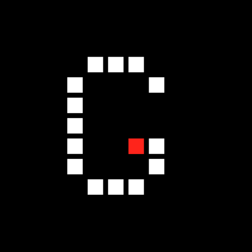
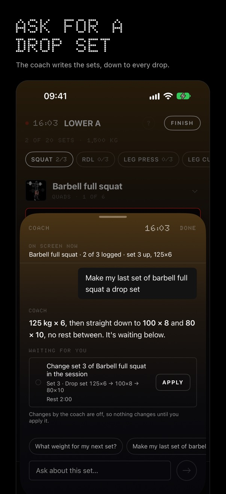
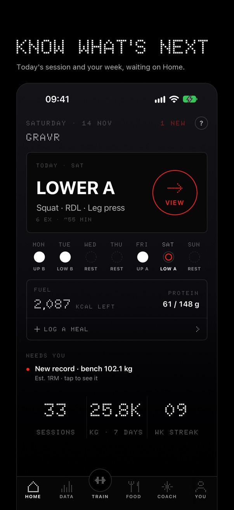
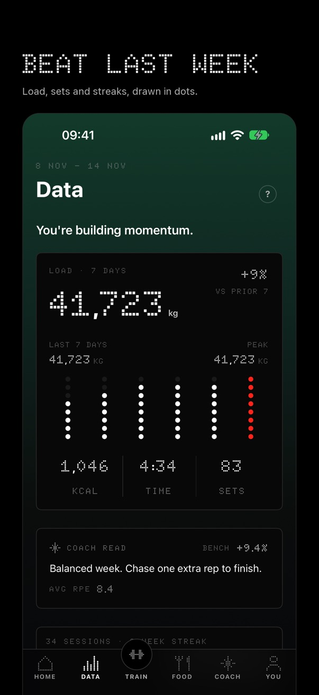
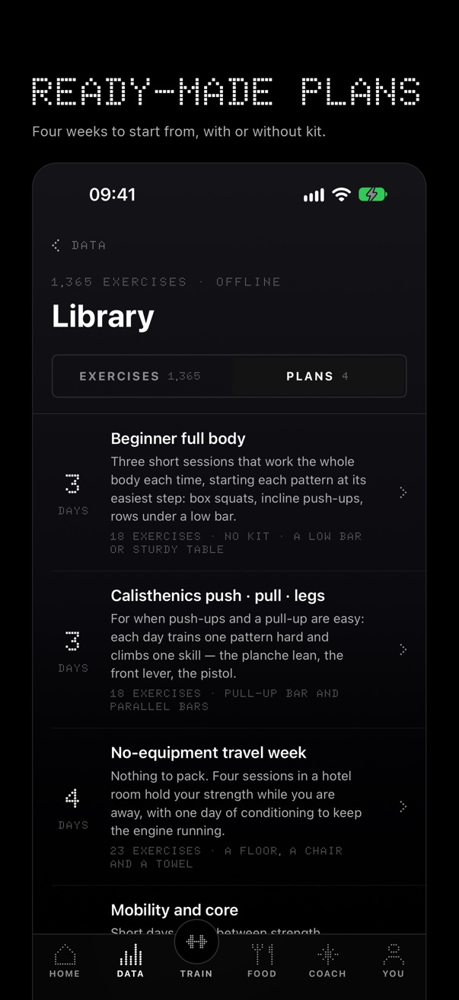
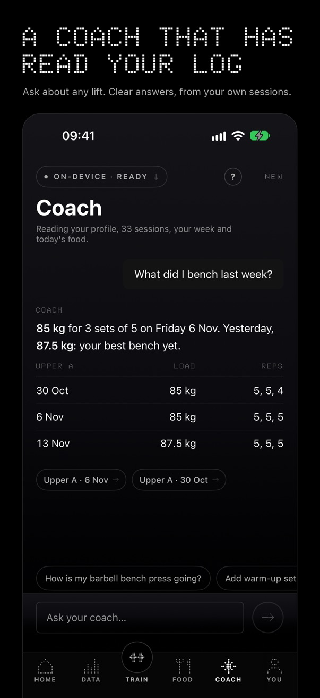
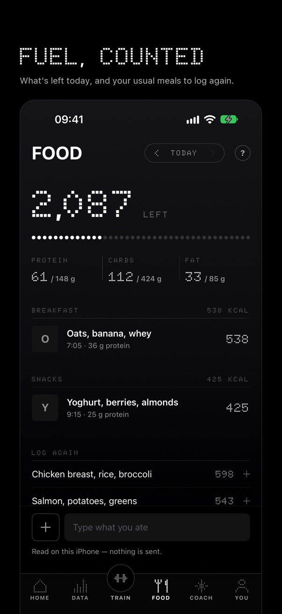
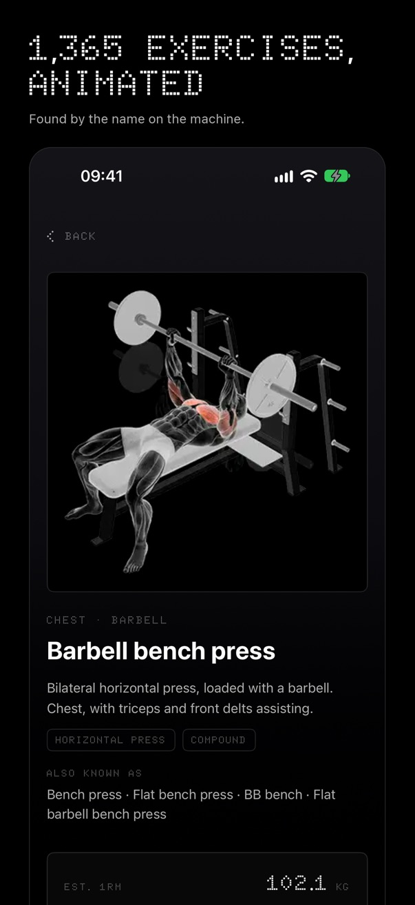

GRAVRLog every set.
Beat last week.
GRAVR is a workout and food log for iPhone and Apple Watch. Tap to log a set, see your week drawn in dots, and ask a coach that has read your log. No account, no ads, no tracking.
Get GRAVR on the App StoreOne purchase. No subscription and no in-app purchases.








New in 2.0
A calmer logger, a coach that writes your sets, ready-made plans, 17 new movements and a simpler Food page. Read the changelog.
What it does
Log a set in a tap
Last time's weight and reps are already there. Tap to log; the rest timer starts on its own, or waits for you. Swap, move or remove an exercise mid-session, with Undo.
Sets of every kind
Working sets, warm-ups, supersets and drop sets with every drop inside one set. Holds run on a stopwatch; carries, rows and runs take distance and time.
A coach that has read your log
Ask what you lifted last week or why a lift has stalled. Ask for a drop set or a new week and it shows exactly what will change before anything does.
Ready-made plans
Start from one of four plans, with or without kit, draft a week from your goal, or build your own by hand.
1,365 exercises, animated
Search by the name on the machine. Every movement has its animation, a plain name and a short definition, and works with no signal.
Food, counted
What is left today, your protein, carbs and fat, and your usual meals to log again in a tap. Photograph a meal, describe it, or enter the numbers.
On your wrist
The Apple Watch app runs the session on your iPhone: log a set, turn the Crown to change the weight, feel the rest end. Workouts land in Apple Health.
See it add up
Records caught as you set them. Your week's load, estimated one-rep maxes, your streak and a wall of every session, drawn in dots.
Bring your own AI
GRAVR has no AI subscription and no server of its own. Know this before you buy:
Free, on your iPhone. On an iPhone with Apple Intelligence, the coach answers from your log and meals are read on the device. Nothing is sent anywhere.
With a service you connect. To have the coach change your plan and write your sets, add an AI service of your own in You › Coach: any OpenAI-compatible service, with your own key. That service bills you itself; GRAVR adds nothing and asks before the first send.
With no AI at all. Logging, plans, the library, Food by numbers, Data, the Watch app and widgets all work without it.
Yours
Your log lives on your iPhone and backs up to your own private iCloud. Export it or erase it whenever you like. The developer runs no server and never receives your data. Privacy policy.